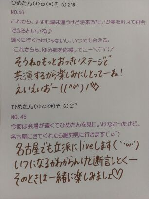

| 2012/11 05 Mon | ひめたん(*>ω<*)そ の228 |
ちゅりりりりーん
今日はBLTさんとオフィシャル
会わせて7着も着ました＼(^^)／
着せ替え人形さんになった気分よ。
撮影かーらーのレッスンー
なんかー1日充実してたなー(*^^*)
明日もみんなでお仕事えいえいおー
今日は天気良すぎたー!!!
会社行く道で近所のちっちゃい子たちが
お外でDSのソフト広げて遊んでたの。
わー
都会のちびっこはすーごい洒落てるのね
ぽかぽかの陽気の下で
ゲームのカセット並び替えるなんて...
ひめたんがちっちゃい時は
公園でお花の櫁を飲んだり
ブランコとかバドとかしたんだけどな。
うーん難しい(´・ω・｀)
乃木坂くいず、もうやってみたかなー？
新曲もちょこーっと聞けるからね。

 来月に岡山イベを楽しみにしてるですが
来月に岡山イベを楽しみにしてるですが
ひめたんはイベは楽しみにしてますか？
楽しみ超楽しみすぎるー(*>ω<*)
live大好きだし、何より地元ー!!!
バンドが組みたくて募集してるのに全然集まらないどうしたらいいと思う?
とりあボーカルかマスコットキャラクターにひめたんを起用しましょう。
話はそれから。
ひめたんは、たい焼きは頭から食べる？それとも尻尾から？
頭かなー。
頭から食べたら賢くなるってゆーし、何より頭美味しいもーん...
おおうごめんよたい焼きさん(´・ω・｀)
すぅちゃんとは最近どお？
ちゃんとおねえちゃんしてる？
おねえちゃんしてるーてか
年変わらないから、おねえたまよりもお友達してる感じよー
宿題教えてる時は立派なおねえたま◎
ひめたんは、声を活かした仕事の声優やラジオ番組に興味ありますか？
声優さんやアナウンサーさんに憧れたことあったよ。
放送部時代は校内放送したり、自分らで作った番組のナレーターしてたよ。
最近はラジオパーソナリティーとか面白そうだなーとか、またunder stationやんないかなーとか思ってたよ。
声って大事だよね∩^ω^∩
ひめたんってマーメイド？
天使です。
今日から、たった今からマーメイドでもあります。
将来はお人形さんになる予定です。
お昼ご飯に何を食べるか迷うんですが、何がいいと思いますか？
鍋しよう鍋！
うちにおいでよ暖まりなよー＼^^／
HKT48の推しメンは？
村重杏奈ちゃん！
実はちょっと面識があるもので(*^^*)ぺろ
さっしーさんも優しす◎
宮崎でイベントをする予定とかってありますか？
運営さーん
んでも嬉しいな∪^ω^∪ありがとーう
いつか宮崎におじゃまするから、そのときはぜひ遊びにきてねー♪
ひめたんスポーツカー興味ある？
もし買うなら何色がいい？
あんまし詳しくないけど、かっこよいよねー
買うならショッキングピンク！

へびの答えいっぱいありがとーう♪
(＊´・ω・＊)ひめたん
へびの答えいっぱいありがとーう♪
(＊´・ω・＊)ひめたん
コメント(150)
2012/11/05 01:18